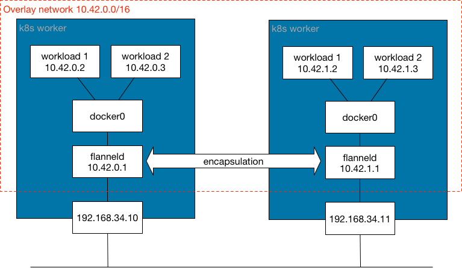
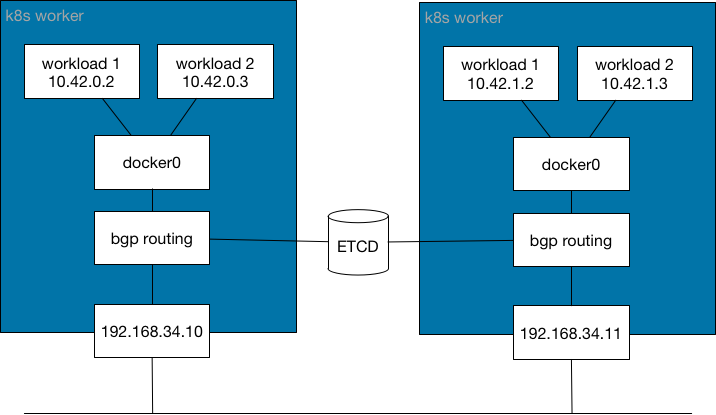
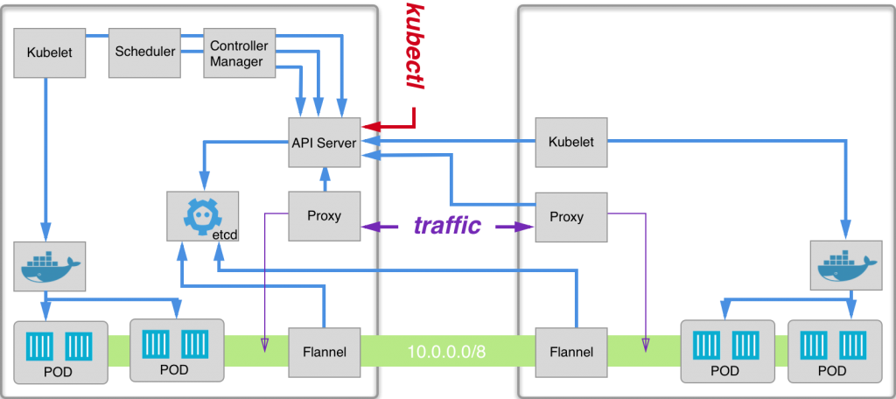

コンテナネットワークインタフェース（CNI）プロバイダー
CNIとは何ですか？
CNI（コンテナネットワークインタフェース）は、 Cloud Native Computing Foundationプロジェクトであり、Linuxコンテナのネットワークインタフェースを構成するためのプラグインを書くための仕様とライブラリで構成されており、いくつかのプラグインが含まれています。CNIは、コンテナのネットワーク接続と、コンテナが削除されたときに割り当てられたリソースを削除することにのみ関心を持っています。
Kubernetesは、ネットワークプロバイダーとKubernetesポッドネットワーキングの間のインターフェースとしてCNIを使用します。
詳細については、 CNI GitHubプロジェクトをご覧ください。
CNIで使用されるネットワークモデルは何ですか？
CNIネットワークプロバイダーは、仮想拡張LAN（ VXLAN）のようなカプセル化ネットワークモデルまたはボーダーゲートウェイプロトコル（ BGP）のような非カプセル化ネットワークモデルを使用して、ネットワークファブリックを実装します。
カプセル化ネットワークとは何ですか？
このネットワークモデルは、Kubernetesクラスターのノードにまたがる既存のレイヤー3（L3）ネットワークトポロジーの上にカプセル化された論理的なレイヤー2（L2）ネットワークを提供します。このモデルでは、ルーティング分配を必要とせずにコンテナ用の孤立したL2ネットワークを持つことができ、処理のオーバーヘッドとオーバーレイカプセル化によって生成されるIPヘッダーから生じるIPパケットサイズの増加という最小限のコストで実現されます。カプセル化情報は、Kubernetesワーカー間でUDPポートを介して配布され、MACアドレスにアクセスする方法に関するネットワーク制御プレーン情報が交換されます。この種のネットワークモデルで一般的に使用されるカプセル化は、VXLAN、インターネットプロトコルセキュリティ（IPSec）、およびIP-in-IPです。
簡単に言えば、このネットワークモデルは、Kubernetesワーカー間に拡張されたネットワークブリッジの一種を生成し、ポッドが接続されます。
このネットワークモデルは、拡張されたL2ブリッジが好まれる場合に使用されます。このネットワークモデルは、KubernetesワーカーのL3ネットワーク遅延に敏感です。データセンターが異なる地理的場所にある場合、ネットワークの分断が発生しないよう、間の遅延が低いことを確認してください。
このネットワークモデルを使用するCNIネットワークプロバイダーには、Flannel、Canal、Weave、およびCiliumが含まれます。デフォルトでは、Calicoはこのモデルを使用していませんが、設定することができます。

カプセル化されていないネットワークとは何ですか？
このネットワークモデルは、コンテナ間でパケットをルーティングするためのL3ネットワークを提供します。このモデルは、孤立したL2ネットワークを生成せず、オーバーヘッドも発生させません。これらの利点は、Kubernetesワーカーが必要なルート分配を管理しなければならないというコストが伴います。カプセル化のためにIPヘッダーを使用する代わりに、このネットワークモデルは、Kubernetesワーカー間でルーティング情報を配布するためのネットワークプロトコル（例えば、 BGPなど）を使用します。
簡単に言えば、このネットワークモデルはKubernetesワーカー間に拡張された一種のネットワークルーターを生成し、ポッドに到達する方法に関する情報を提供します。
このネットワークモデルは、ルーティングされたL3ネットワークが好まれる場合に使用されます。このモードは、KubernetesワーカーのOSレベルでルートを動的に更新します。レイテンシに対して敏感ではありません。
このネットワークモデルを使用するCNIネットワークプロバイダーには、CalicoとCiliumが含まれます。Ciliumはこのモデルで設定することができますが、デフォルトのモードではありません。

Rancherによって提供されるCNIプロバイダーは何ですか？
SUSE® Rancher Prime: RKE2 Kubernetesクラスター
Rancherは、RKE2 Kubernetesクラスター用に次のCNIネットワークプロバイダーを提供します：Calico、Canal、Cilium、およびFlannel。
Rancherから新しいKubernetesクラスターを作成する際に、CNIネットワークプロバイダーを選択できます。
Calico
Calicoは、クラウド全体のKubernetesクラスターにおけるネットワーキングとネットワークポリシーを可能にします。デフォルトでは、Calicoは純粋でカプセル化されていないIPネットワークファブリックとポリシーエンジンを使用して、Kubernetesワークロードのネットワーキングを提供します。ワークロードは、BGPを使用してクラウドインフラストラクチャとオンプレミスの両方で通信できます。
必要に応じて、CalicoはステートレスなIP-in-IPまたはVXLANカプセル化モードも提供します。Calicoはポリシーの分離も提供し、高度なインバウンドおよびアウトバウンドポリシーを使用してKubernetesワークロードを保護および管理できます。
Kubernetesワーカーは、BGPを使用する場合はTCPポート`179`を、VXLANカプセル化を使用する場合はUDPポート`4789`を開く必要があります。さらに、Typhaを使用する場合はTCPポート`5473`が必要です。詳細については、ユーザークラスターのポート要件を参照してください。
|
重要:
Rancher v2.6.3では、RKE2のインストール時にWindowsノードでCalicoのプローブが失敗します。この問題はv2.6.4で解決されていることに注意してください。
|

詳細については、次のページを参照してください：
カナル
カナルは、FlannelとCalicoの両方の利点を提供するCNIネットワークプロバイダーです。これにより、ユーザーはCalicoとFlannelのネットワーキングを統合されたネットワーキングソリューションとして簡単にデプロイでき、Calicoのネットワークポリシーの強制と、Calico（カプセル化されていない）および/またはFlannel（カプセル化された）ネットワーク接続オプションの豊富なスーパーセットを組み合わせることができます。
Rancherでは、CanalがFlannelとVXLANカプセル化を組み合わせたデフォルトのCNIネットワークプロバイダーです。
Kubernetesワーカーは、UDPポート`8472`（VXLAN）とTCPポート`9099`（ヘルスチェック）を開く必要があります。Wireguardを使用する場合は、UDPポート`51820`と`51821`を開く必要があります。詳細については、ユーザークラスターのポート要件を参照してください。

詳細情報については、 Rancherが管理するCanalのソースと Canal GitHubページを参照してください。
Cilium
Ciliumは、Kubernetesにおけるネットワーキングとネットワークポリシー（L3、L4、L7）を可能にします。デフォルトでは、CiliumはeBPF技術を使用してノード内でパケットをルーティングし、他のノードにパケットを送信するためにVXLANを使用します。カプセル化されていない技術も構成可能です。
Ciliumは、eBPFの完全な潜在能力を活用するために、5.2以上のカーネルバージョンを推奨します。Kubernetesワーカーは、VXLAN用にTCPポート`8472`を、ヘルスチェック用にTCPポート`4240`を開く必要があります。さらに、ヘルスチェックのためにICMP 8/0を有効にする必要があります。詳細情報については、 Ciliumのシステム要件を確認してください。
Flannel
Flannelは、Kubernetes用に設計されたL3ネットワークファブリックを構成するためのシンプルで簡単な方法です。Flannelは、各ホストで「flanneld」という単一のバイナリエージェントを実行し、事前に設定されたアドレス空間から各ホストにサブネットリースを割り当てる役割を担います。Flannelは、Kubernetes APIまたはetcdを直接使用して、ネットワーク構成、割り当てられたサブネット、およびホストのパブリックIPなどの補助データを保存します。パケットは、いくつかのバックエンドメカニズムのいずれかを使用して転送され、デフォルトのカプセル化は VXLANです。
カプセル化されたトラフィックは、デフォルトで暗号化されていません。Flannelは、暗号化のための2つのソリューションを提供します。
-
IPSecは、Kubernetesワーカー間で暗号化されたIPSecトンネルを確立するために strongSwanを使用します。これは暗号化のための実験的なバックエンドです。
-
WireGuardは、strongSwanのより高速な代替手段です。
KubernetesワーカーはUDPポート`8472`（VXLAN）を開放する必要があります。詳細については、ユーザークラスターのポート要件を参照してください。

詳細については、 Flannel GitHub Pageをご覧ください。
Ciliumにおけるノード間のIngressルーティング
デフォルトでは、Ciliumはポッドが他のノードのポッドと通信することを許可しません。これを回避するために、Ingressコントローラーを有効にし、`CiliumNetworkPolicy`を使用してノード間でリクエストをルーティングします。
Cilium CNIを選択し、新しいクラスターのプロジェクトネットワーク隔離を有効にした後、次のように設定します：
apiVersion: cilium.io/v2
kind: CiliumNetworkPolicy
metadata:
name: hn-nodes
namespace: default
spec:
endpointSelector: {}
ingress:
- fromEntities:
- remote-nodeプロバイダー別のCNI機能
以下の表は、Rancherが提供する各CNIネットワークプロバイダーの異なる機能を要約しています。
| プロバイダ | ネットワークモデル | ルート分配 | ネットワークポリシー | メッシュ | 外部データストア | 暗号化 | Ingress/Egressポリシー |
|---|---|---|---|---|---|---|---|
カナル |
カプセル化（VXLAN） |
いいえ |
はい |
いいえ |
K8s API |
はい |
はい |
Flannel |
カプセル化（VXLAN） |
いいえ |
いいえ |
いいえ |
K8s API |
はい |
いいえ |
Calico |
カプセル化（VXLAN、IPIP）または非カプセル化 |
はい |
はい |
はい |
EtcdとK8s API |
はい |
はい |
ウィーブ |
カプセル化された |
はい |
はい |
はい |
いいえ |
はい |
はい |
Cilium |
カプセル化（VXLAN） |
はい |
はい |
はい |
EtcdとK8s API |
はい |
はい |
-
ネットワークモデル：カプセル化または非カプセル化。詳細については、CNIで使用されるネットワークモデルは何ですか？をご覧ください。
-
ルート分配：インターネット上でルーティングおよび到達可能性情報を交換するために設計された外部ゲートウェイプロトコル。BGPは、クラスター間のポッド間ネットワーキングを支援できます。この機能は、非カプセル化CNIネットワークプロバイダーには必須であり、通常はBGPによって実行されます。ネットワークセグメントに分割されたクラスターを構築する場合、ルート分配はあると便利な機能です。
-
ネットワークポリシー：Kubernetesは、ネットワークポリシーを使用して、どのサービスが互いに通信できるかに関するルールを強制する機能を提供します。この機能はKubernetes v1.7以降安定しており、特定のネットワーキングプラグインで使用する準備が整っています。
-
メッシュ：この機能により、異なるKubernetesクラスター間でのサービス間ネットワーキング通信が可能になります。
-
外部データストア：この機能を持つCNIネットワークプロバイダーは、そのデータのために外部データストアが必要です。
-
暗号化:この機能により、暗号化された安全なネットワーク制御およびデータプレーンが可能になります。
-
Ingress/Egressポリシー：この機能は、Kubernetesと非Kubernetesの通信のためのルーティング制御を管理することを可能にします。
CNIコミュニティの人気
The following table summarizes different GitHub metrics to give you an idea of each project’s popularity and activity levels. This data was collected in December 2025.
| Provider | Project | Stars | Forks | Contributors |
|---|---|---|---|---|
Canal |
721 |
96 |
20 |
|
Flannel |
9.5k |
2.9k |
249 |
|
Calico |
7.3k |
1.6k |
416 |
|
Weave |
6.6k |
676 |
82 |
|
Cilium |
24.6k |
3.8k |
1108 |
どのCNIプロバイダーを使用すべきですか？
それはプロジェクトのニーズによります。さまざまな機能とオプションを持つ多くの異なるプロバイダーがあります。すべての人のニーズを満たすプロバイダーは一つもありません。
CanalはデフォルトのCNIネットワークプロバイダーです。ほとんどのユースケースに対して推奨します。Flannelを使用してコンテナのためのカプセル化されたネットワーキングを提供し、ネットワーキングの観点からプロジェクト/ネームスペースの分離を提供できるCalicoネットワークポリシーを追加します。
CNIネットワークプロバイダーをどのように設定できますか？
クラスターのネットワークプロバイダーを設定する方法については、クラスターオプションをご覧ください。より高度な設定オプションについては、設定ファイルを使用してクラスターを設定する方法をご覧ください。